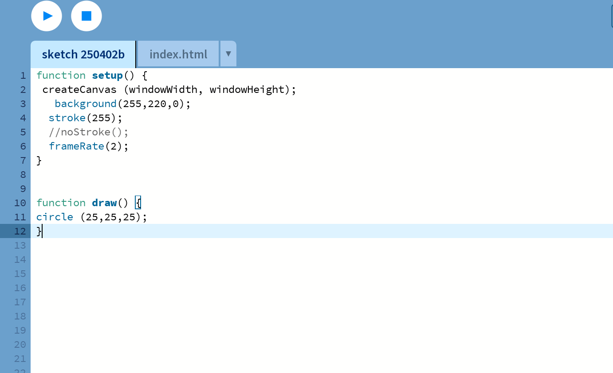
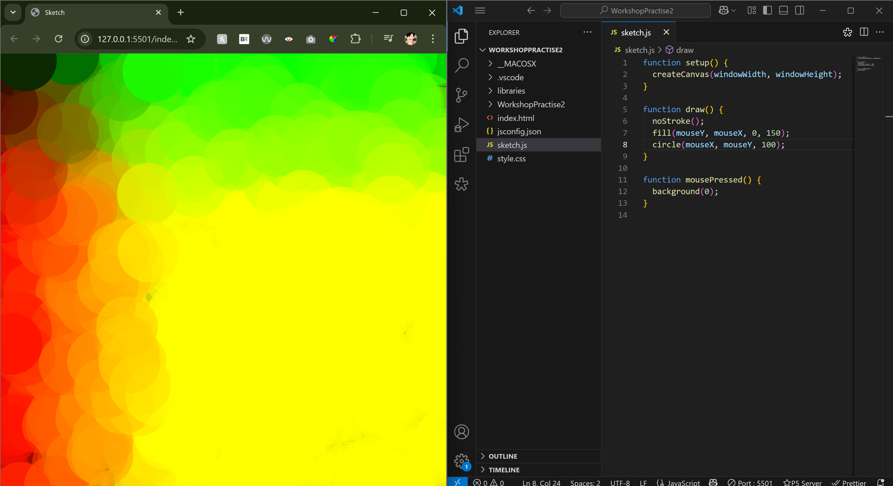
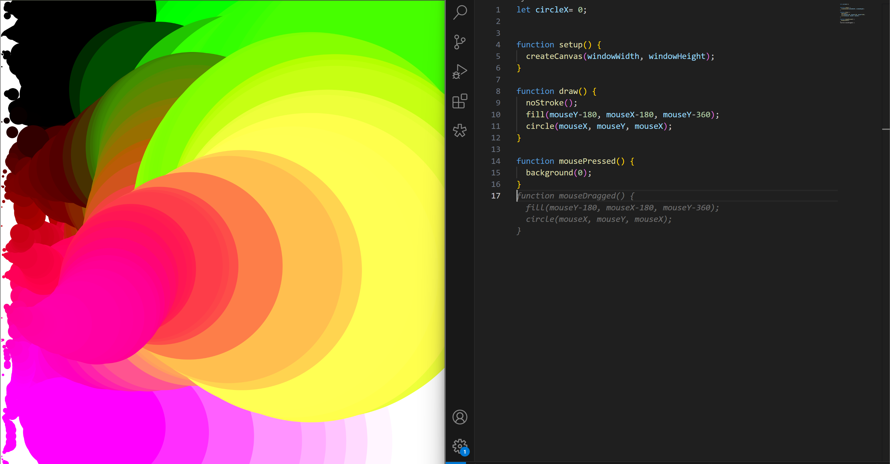
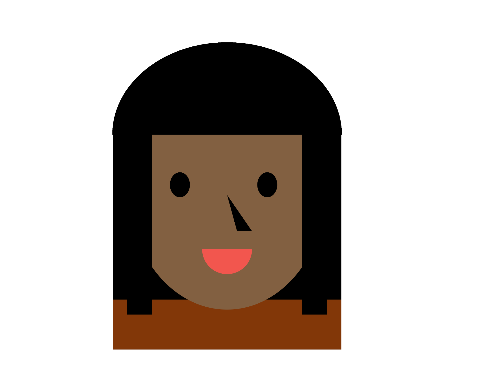

We started out with the basics of P5 js after visiting the Yayoi Kusama exhibit. It was interesting to learn how to animate using JavaScript, and to understand how P5.js functions by continuously refreshing the canvas and redrawing shapes based on the frame rate, creating the illusion of motion.

I played around a lot with P5.js. I kept making typos in Processing, so I ended up checking out p5js.org and figured out how to run it through VS Code instead. That made things way easier to manage and debug.

To make a Kusama-inspired sketch, I experimented with many different ideas and went through several iterations before landing on the final one I was happy with. It was really fun to see how I could utilize the different aspects of P5js

Making the self-portrait was tricky, getting the aspect ratio and shape placement right took some work. I showed it in class but kept tweaking it at home to make it more interactive. It’s not super out-of-the-box, but I like how it turned out.

The homescreen took awhile, mainly because I struggled with making imaged into links in P5 and also making the mouse draw to mimic 'Scratch art'. This helped me become more familiar with the map() function

I watched so many tutorials by The Coding Train. His videos helped a lot in undersating the many of the functions and also how the worked on a more theoretical level, making it easier for me to wrap my head around